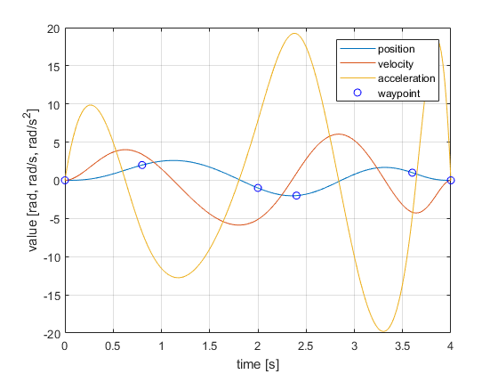

Contents
% This example shows howto use the HebiTrajectoryGenerator API to create % paths to smoothly move through waypoints. % % Requirements: MATLAB 2013b or higher % % Author: Florian Enner % Created: 14 July, 2017 % API: hebi-matlab-1.0 % % Copyright 2017 HEBI Robotics
General
For series elastic actuators such as the X-series modules it is important to command smooth trajectories to avoid oscillations induced by the spring element. Additionally, it helps significantly to not only command positions, but also velocities and if possible torques.
Trajectories work on a joint level and are technically independent of the kinematic configuration. The API however requires knowledge of HebiKinematics to access meta-data such as velocity limits. Thus, position and velocity control can be done with only knowledge of the number of joints in a system. A full model of the system is however required for
- Torque control, i.e., converting joint accelerations to corresponding torques and forces
- 'Linear'-type trajectories that move the end-effector in world coordinates
Single Actuator Joint Trajectory
The following exampe creates a trajectory through position waypoints for a single actuator. The time vector can be automatically determined based on the joint limits. Alternatively the time can be set manually.
- 'Duration' sets the total desired duration
- 'Time' sets the times at which each waypoint should be hit
For more options please see our online documentation or the corresponding help files.
% Setup single module for accessing meta-data kin = HebiKinematics(); kin.addBody('X5-1'); trajGen = HebiTrajectoryGenerator(kin); trajGen.setSpeedFactor(0.5); % slow down to half speed (good for testing) % Calculate trajectory through position waypoints waypoints = [0 2 -1 -2 1 0]; trajectory = trajGen.newJointMove(waypoints);
% Evaluate trajectory at 100 Hz resolution t = 0:0.01:trajectory.getDuration(); [p,v,a] = trajectory.getState(t); % scalar or vector display(waypoints); % Display result plot(t,p); hold on; grid on; plot(t,v); plot(t,a); tWpt = trajectory.getWaypointTime(); plot(tWpt, trajectory.getState(tWpt), 'bo'); hold off; legend position velocity acceleration waypoint xlabel('time [s]'); ylabel('value [rad, rad/s, rad/s^2]');
waypoints =
0 2 -1 -2 1 0
 Moving a robot to random waypoints
In addition to providing low-level access to the raw trajectory, we provide convenience wrappers that simplify interactions with the HebiGroup and HebiKinematics APIs.
'moveJoint()' moves between waypoints and blocks until the trajectory is executed.

% Setup 2 dof planar RR arm kin = HebiKinematics(); kin.addBody('X5-4'); % base joint kin.addBody('X5-Link', 'ext', 0.35, 'twist', pi); kin.addBody('X5-1'); kin.addBody('X5-Link', 'ext', 0.25, 'twist', pi); % Setup trajectory generator trajGen = HebiTrajectoryGenerator(kin); trajGen.setSpeedFactor(0.5); trajGen.setMinDuration(0.5); % Connect to modules (replace names with your own) group = HebiLookup.newGroupFromNames('2dof', {'base', 'knee'}); % Determine direction of gravity to compensate for gravitational effects fbk = group.getNextFeedback(); % assume fixed base gravityVec = -[fbk.accelX(1) fbk.accelY(1) fbk.accelZ(1)]; % Move to random waypoints current = fbk.position; for i = 1:20 next = (rand(size(current)) - 0.5) * pi/2; % max +/- pi/2 trajGen.moveJoint(group, ... % target actuators [current; next], ... % waypoints 'GravityVec', gravityVec, ... % compensate for gravity 'EnableDynamicsComp', true); % compensate for accelerations current = next; end
% Display
display(kin);
display(trajGen);
display(group);
kin =
<a href="matlab:helpPopup HebiKinematics">HebiKinematics</a> with properties:
numBodies: 4
numDoF: 2
mass: 1.35 [kg]
payload: 0 [kg]
body type isDoF mass
---- ---------- ----- -----
1 X5-4 true 0.335
2 X5-Link false 0.400
3 X5-1 true 0.315
4 X5-Link false 0.300
trajGen =
<a href="matlab:helpPopup HebiTrajectoryGenerator">HebiTrajectoryGenerator</a> with properties:
algorithm: UnconstrainedQp
minDuration: 0.5 [s]
speedFactor: 0.5
group =
<a href="matlab:helpPopup HebiGroup">HebiGroup</a> with properties:
feedbackFrequency: 100 [Hz]
commandLifetime: 0.25 [s]
numModules: 2
logPath: []
Module Family Name Serial Number
------ --------------- --------------- ---------------
1 2dof base X-00134
2 2dof knee X-00148